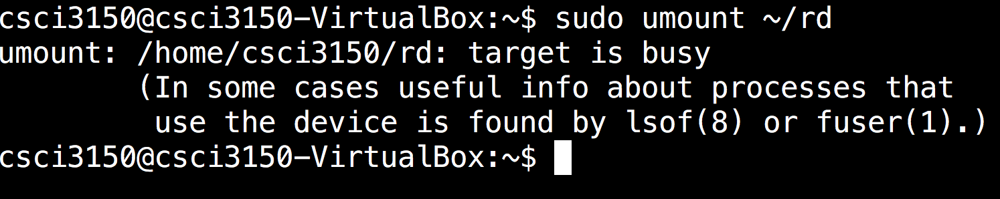
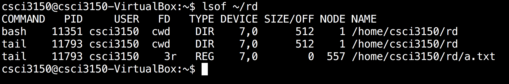
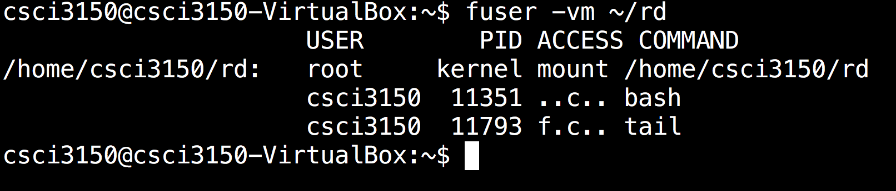

Mount
In Unix, all files are arranged under a big tree '/'. Uing mount can attach your device to it so that user can access.
mount connects the device to a mount point (A directory). User can access it just like as a normal directory.
Remember to unmount after use, otherwise the file system is not fully synchonized, causing loss of data.
Steps
First create a mount point at VM.
$ mkdir ~/rdThen we mount the disk to the mount point.
$ sudo mount -t vfat -o loop test.disk ~/rdAfter that we can unmount the disk by:
$ sudo umount ~/rd
How to solve device busy problem
There is the case where a process continously occupies the device such that you cannot unmount it. 
In this case,we can make use of either one of the two commands to locate the process.
Method 1: lsof
$ lsof ~/rd

Method 2: fuser
$ fuser -vm ~/rd

By these two commands, you can know tail with PID 11793 is occupying the resource. By killing it using kill -9, you can umount the resource successfully.